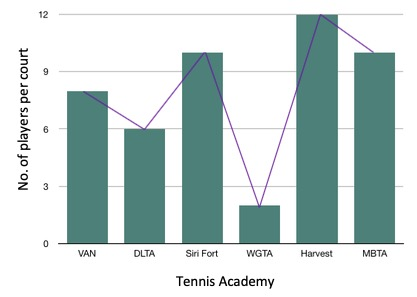
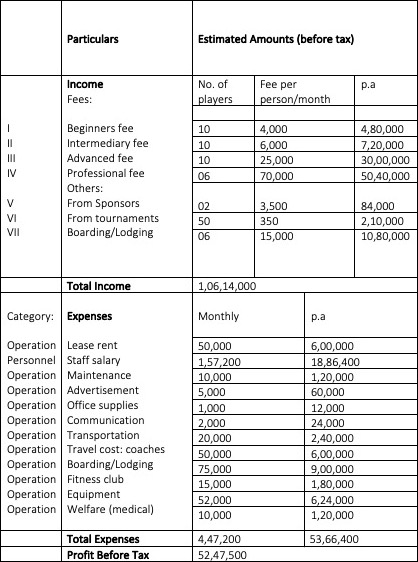
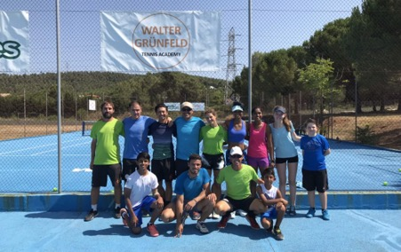
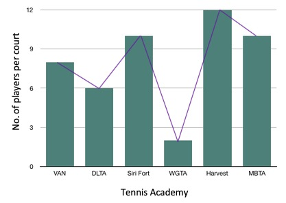
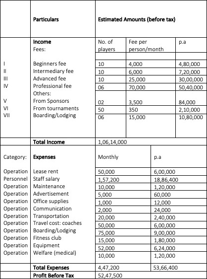
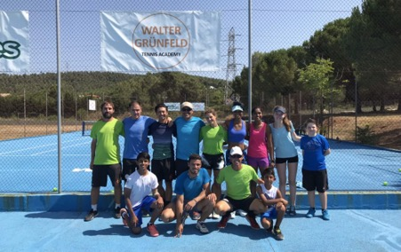

Elite Spanish Tennis Coach Looks To Resurrect India's Glory Days
By Vedika Gupta
SONIPAT, May 4 – It has been around five decades since India produced a globally recognized champion such as Vijay Amritraj back in the 1970s. Though the country has seen talents like Mirza, Paes, Bopanna, none have come near to the elite status which Amritraj once held.
India and tennis may not be two words one would automatically put together. Like most other sports, it has to vie for attention in cricket-obsessed India. There is a long list of reasons to answer why Indians go to Europe or the States to turn pro.